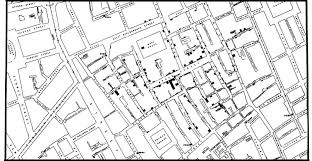
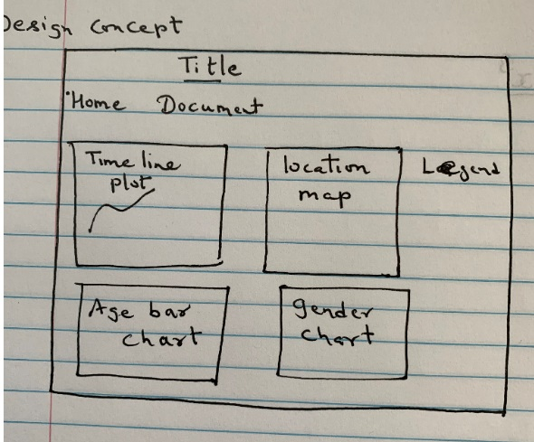
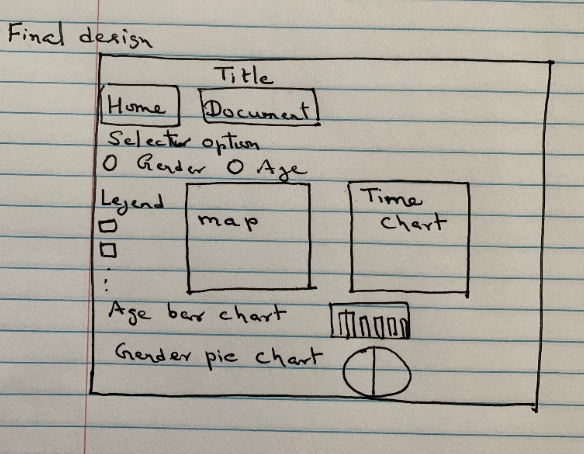
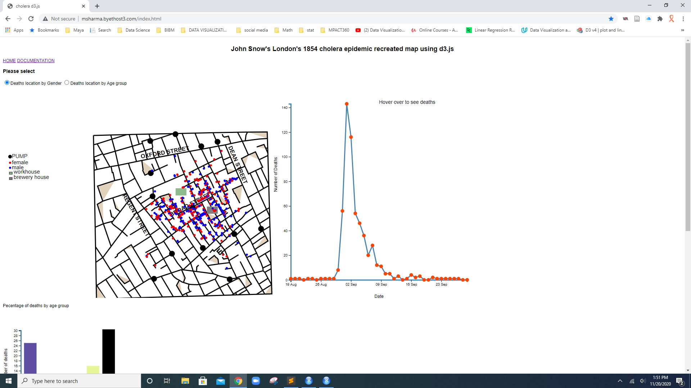
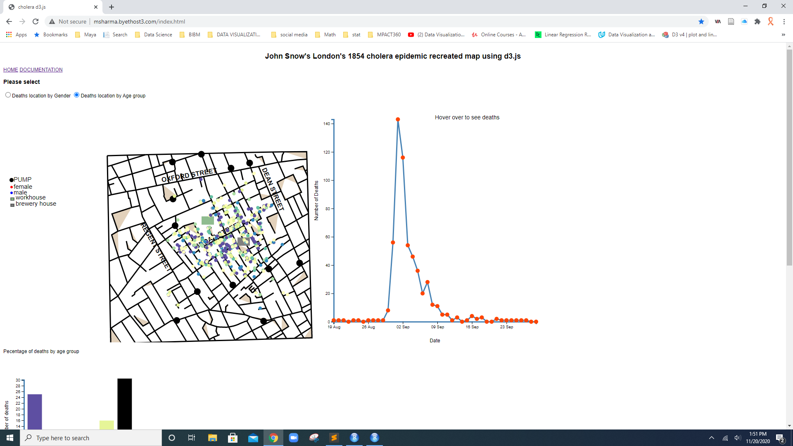
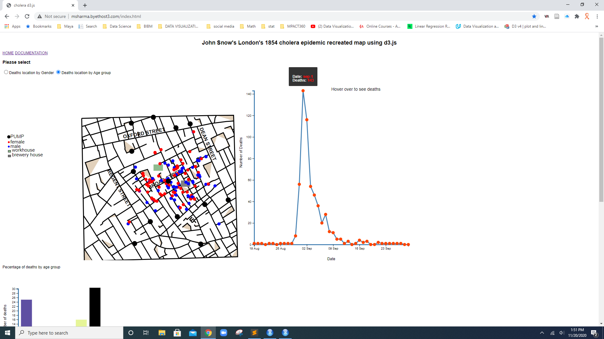
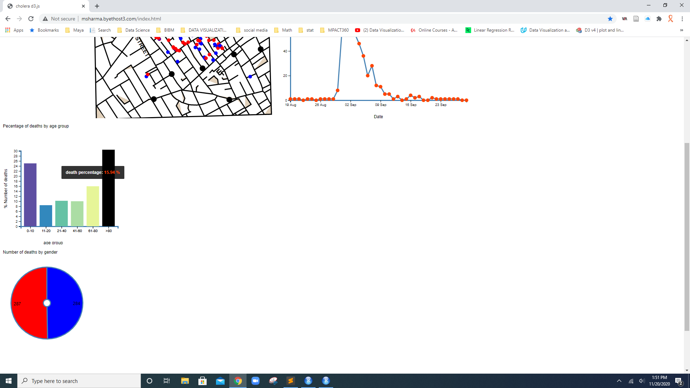
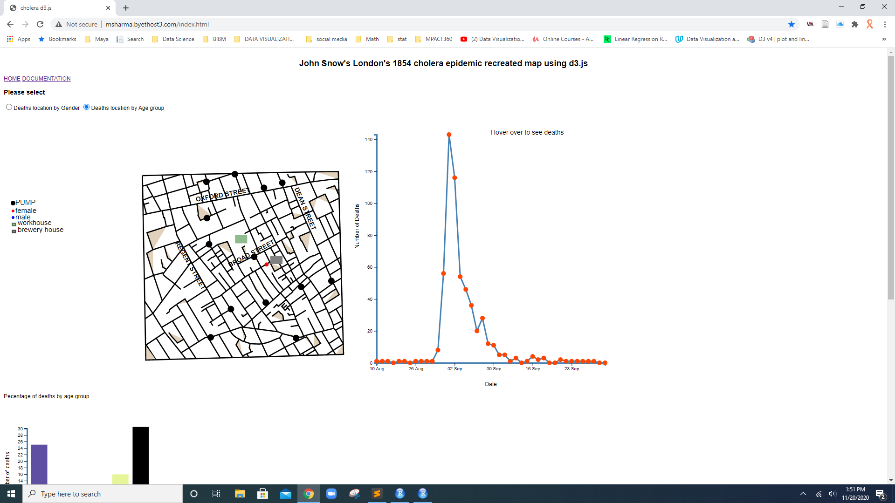
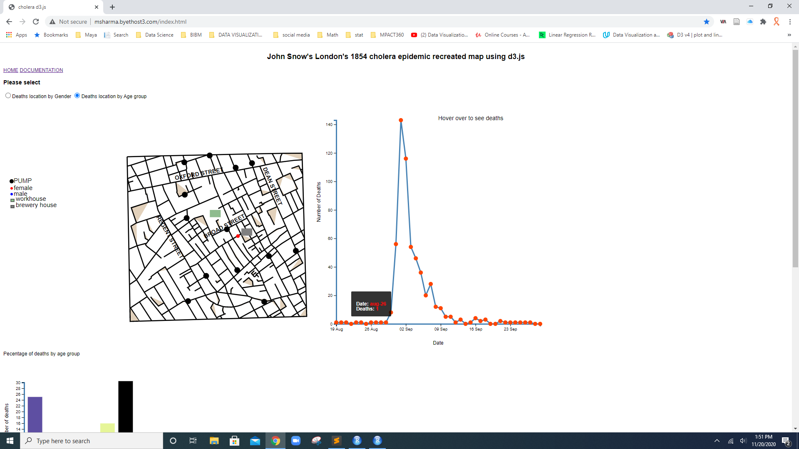

John Snow's London's 1854 cholera epidemic recreated map using d3.js
Maya Sharma
Department of Data Science, IUPUI, Indianapolis, Indiana, USA
Introduction: In 1854 there was cholera epidemic outbreak in Soho, London. Many people died due to the epidemic. Wikipedia says, He was an English physician and a leader in the development of anesthesia and medical hygiene. He is considered one of the founders of modern epidemiology, in part because of his work in tracing the source of a epidemic outbreak which he curtailed by removing the handle of a water pump. He mapped the epidemic after visiting the place communicating with local people in affected area. He used a traditional paper sketch or map to visualize the death location including pumps and number of deaths by gender and age group including data.

blog.cdc.gov
A picture speaks more and clear always and visualization is the best way to communicate and in doing analysis. Various computer programming is used to visualize information and this traditional cholera map too recreated using several tools. This is a recreation of the map using information provided with d3.js implementation.
Goal of this visualization
Data source: https://khreda.com/teaching/2020/H517/project1/
Design Sketches:


Tools used: D3.js version 4, sublime text, node js server and chrome browser to run and test the visualization.
Files used: deathdays.csv, pumps.csv, streets.json and two more csv files created for workhouse and brewery using x and y coordinates.
Methodology: Given files are loaded and wit the help of JavaScript functions and d3.js library they were linked according to need. Color for gender is taken blue and red for make and female by considering general convention where as color range for age group idea has been taken through color palette through Dataquest page. Interactivity and legend are takes care accordingly.
Description of the visualization: How many deaths by date occur can be seen hovering over the time line graph dots. Deaths by age range is clearly visible as shown the picture below:






Red dots as female and blue dots as male as well as black dots represent water pumps. Rectangular shapes are taken to show locations for brewery and workhouse in the picture which clearly helps to see death cluster by locations. It is clear here their deaths are more near pump locations which predicts water contamination. Bar charts by age group shows that people of age range more than 80 and between 0-10 (kids) died more than others. The reason may be they staty home and came in contact with pump water more.Other age group shown in bar graph died are less in number in comparison to kids and old aged people. One reason may be that these people remain in school or worksites for most of the time which kept them away from using pump water more.